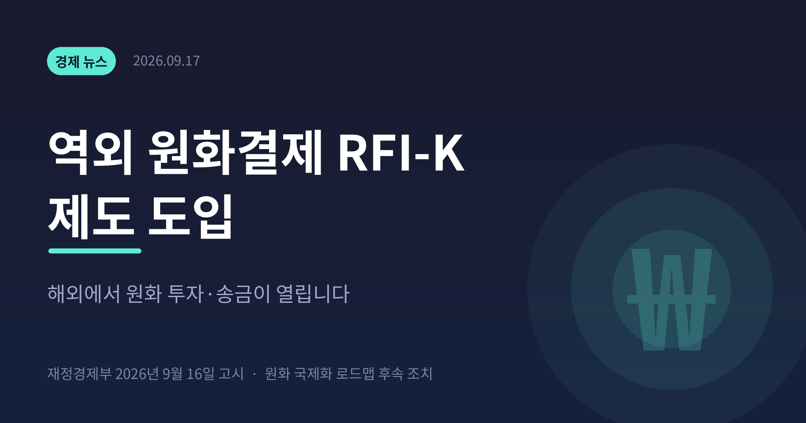
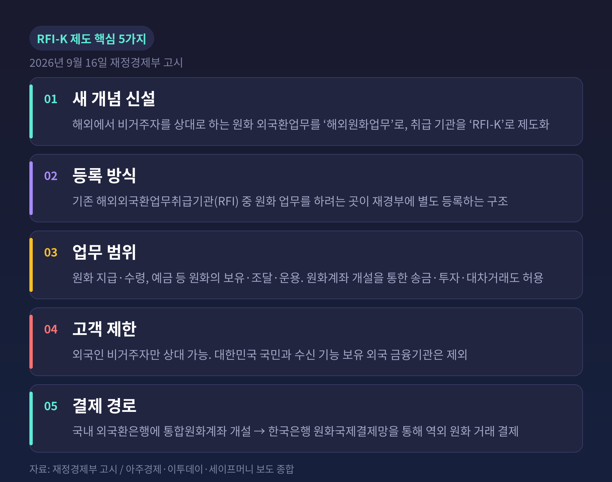
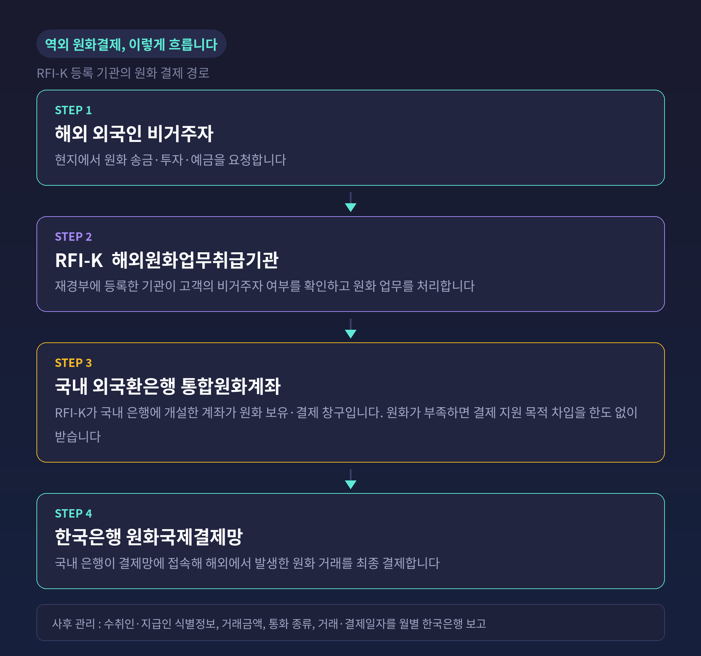
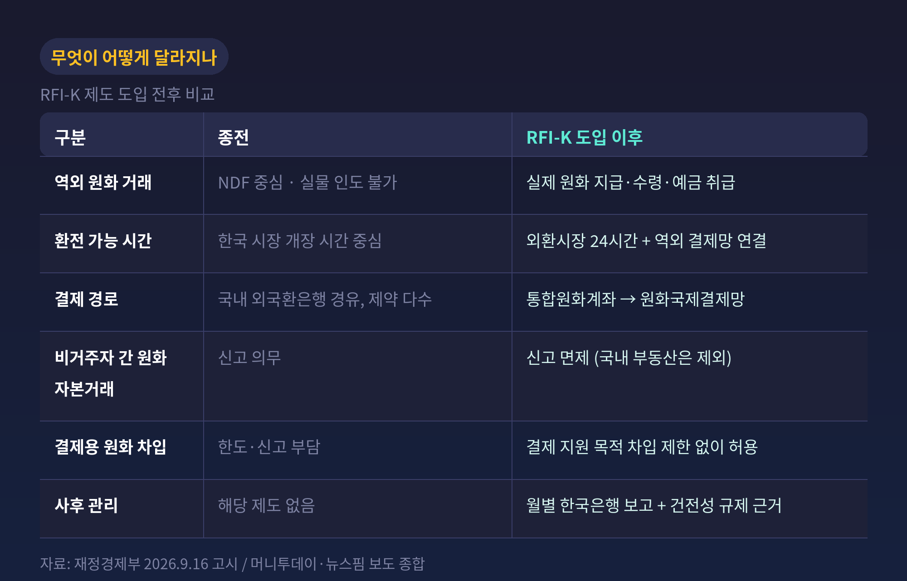
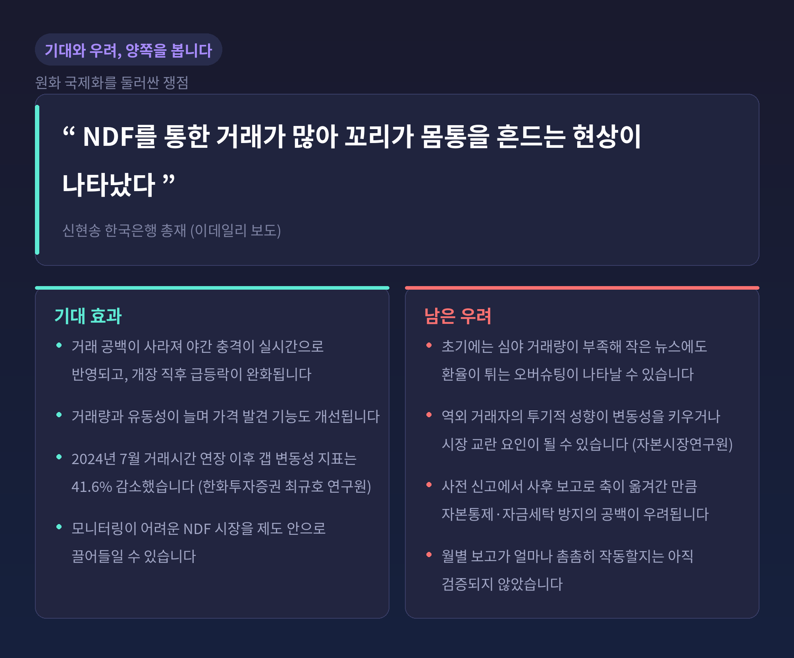
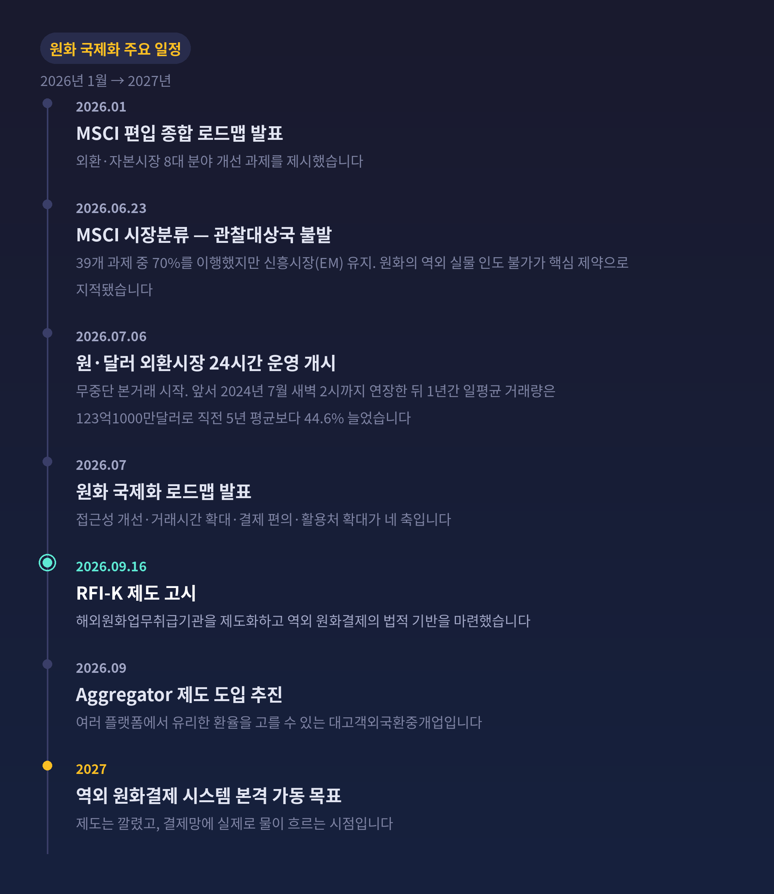

이번 글에서는 재정경제부가 9월 16일 고시한 RFI-K 제도를 정리해 보겠습니다. 용어는 낯설지만 내용은 분명합니다. 해외에 있는 외국 금융기관이 현지 외국인을 상대로 실제 원화를 주고받을 수 있게 된 것입니다.
■9월 16일, 정부가 고시한 것
재정경제부는 2026년 9월 16일 '외국 금융기관의 외국환업무에 관한 지침'과 '외국환거래규정' 개정안을 개정·고시했습니다.
핵심은 두 가지 개념을 새로 만든 데 있습니다. 해외에서 비거주자를 대상으로 수행하는 원화 관련 외국환업무를 '해외원화업무'로 규정하고, 이를 취급하는 기관을 '해외원화업무취급기관(RFI-K)'으로 제도화했습니다. 등록·변경·폐지 절차도 함께 마련됐습니다.
RFI-K는 완전히 새로운 라이선스가 아닙니다. 기존 해외외국환업무취급기관(RFI) 가운데 원화 업무를 하려는 곳이 재경부에 별도로 등록하는 구조입니다. 기존 제도 위에 얹는 '원화 전문 자격'이라고 보시면 됩니다.
등록을 마친 기관은 해외에서 외국인 비거주자를 상대로 원화 지급과 수령, 예금 등 원화의 보유·조달·운용을 할 수 있습니다. 원화계좌를 개설해 송금이나 투자, 대차거래를 하는 것도 허용됩니다.
다만 고객 범위에는 선을 그었습니다. 대한민국 국민은 대상에서 제외되고, 은행처럼 수신 기능을 보유한 외국 금융기관도 빠졌습니다. 오직 외국인 비거주자만 상대할 수 있습니다.
절차상으로도 급하게 밀어붙인 조치는 아닙니다. 8월 24일부터 9월 3일까지 행정예고로 관계기관·업계·전문가 의견을 수렴하고, 국무조정실 규제심사까지 마친 뒤 고시됐습니다.

■결제는 어떤 경로로 이뤄지나
제도의 실질은 결제 배관에 있습니다. 순서는 이렇습니다.
RFI-K가 국내 외국환은행에 통합원화계좌를 개설합니다. 그러면 해당 국내 은행이 한국은행 원화국제결제망에 접속해, 해외에서 발생한 원화 거래를 결제합니다. 해외 금융기관이 국내 금융망과 연결되는 셈입니다.
결제가 막히지 않도록 안전장치도 뒀습니다. 결제 과정에서 일시적으로 원화가 부족할 경우, 국내 은행으로부터 결제 지원 목적의 원화 차입(오버드래프트)을 제한 없이 허용했습니다. 보도에 따르면 원화 차입 신고 면제 기준도 기존 300억원에서 1000억원으로 올랐습니다.
비거주자 간 원화표시 자본거래에 대한 신고 의무 역시 면제됩니다. 단, 국내 부동산 거래는 면제 대상에서 빠졌습니다.
대신 확인과 보고 의무가 새로 붙었습니다. RFI-K는 고객이 외국인 비거주자인지 직접 확인해야 합니다. 그리고 수취인·지급인 식별정보, 거래금액, 통화 종류, 거래·결제일자 등을 월별로 한국은행에 사후 보고해야 합니다. 정부는 필요할 경우 해당 기관의 원화자금 조달·운용 방식과 자산·부채 범위를 제한할 수 있는 근거도 확보했습니다.
규제의 무게중심이 옮겨간 것입니다. 사전 신고에서 사후 보고로. 문턱은 낮추고, 대신 뒤에서 들여다보는 방식입니다.

■왜 지금인가 — MSCI가 짚은 한 문장
이번 조치를 이해하려면 석 달 전으로 돌아가야 합니다.
MSCI는 2026년 6월 23일(현지시간) '2026년 시장분류 평가 결과'를 발표하며 한국을 신흥시장(EM)으로 유지했습니다. 선진국시장 지수 관찰대상국 등재가 또 무산된 것입니다.
MSCI가 개선이 필요하다고 꼽은 항목은 다섯 가지였습니다. 외환시장 자유화, 투자자 등록·계좌 개설, 정보 흐름, 청산·결제, 증권 이동성입니다. 모두 외국인 투자자가 한국 시장에 들어와 투자하고 자금을 회수하는 과정과 직결됩니다.
그중 가장 큰 걸림돌은 외환시장이었습니다. MSCI는 원화가 역외에서 실물 인도 방식으로 거래되지 않는다는 점을 핵심 제약으로 지적했습니다. 또 연장된 거래 시간대의 역내 유동성이 선진시장 수준의 주문 집행을 뒷받침하기에 부족하다고 평가했습니다.
정부 입장에서는 뼈아픈 결과였습니다. 39개 과제 가운데 70%를 이행했는데도 핵심 항목의 평가가 달라지지 않았기 때문입니다.
청산·결제 쪽 지적도 구체적이었습니다. 옴니버스 계좌와 당일 원화차입 제도는 마련됐지만 실제 활용도가 낮고, 결제 전에 원화를 미리 조달해야 하는 부담이 여전하다는 것입니다.
9월 16일 고시는 바로 이 "역외에서 실물 인도가 안 된다"는 한 문장을 겨냥한 조치로 읽힙니다.
■1997년 이후의 원화, 그리고 NDF
원화가 왜 이런 처지에 놓였는지도 짚어야 합니다.
한국은 1997년 외환위기 이후 해외 투기자본에 따른 환율 급변을 막기 위해 외국인의 원화 보유와 역외 거래를 제한해왔습니다. 그래서 외국인 투자자는 한국 시장이 열려 있는 시간에만 국내 은행을 통해 원화를 환전할 수 있었습니다.
서울 외환시장이 문을 닫은 밤에는 어떻게 했을까요. 역외차액결제선물환(NDF) 시장을 이용했습니다. NDF는 실제 원화를 주고받지 않고, 계약 환율과 만기 환율의 차액만 달러로 정산하는 파생상품입니다.
문제는 주요 대외 변수가 대부분 서울시장 마감 이후에 터진다는 점입니다. 미국 고용지표, FOMC 결과, 지정학적 리스크가 그렇습니다. 결국 NDF가 사실상 밤사이 원화 가격을 결정하는 역할을 맡아왔습니다. NDF 환율이 먼저 급등락하면 다음 날 개장 직후 원·달러 환율이 이를 한꺼번에 반영하는 '갭 변동성'도 반복됐습니다.
신현송 한국은행 총재는 이를 "꼬리가 몸통을 흔드는 현상"이라고 표현했습니다. 모니터링이 어려운 NDF 시장을 양성화해 제도 안으로 끌어들여야 한다는 것이 총재의 진단입니다.
정부의 전략은 규제가 아니라 유도입니다. NDF를 직접 누르지 않고, 국내 시장의 거래 시간과 참여자를 넓혀 수요가 스스로 역내로 옮겨오게 하는 방식입니다.
효과는 숫자로도 확인됩니다. 2024년 7월 거래시간을 새벽 2시까지 연장한 뒤 1년간(2024년 7월~2025년 6월) 국내 현물환시장 일평균 거래량은 123억1000만달러로, 직전 5년 평균보다 44.6% 증가했습니다. 최규호 한화투자증권 연구원은 같은 기간 갭 변동성 지표가 41.6% 줄었다고 분석했습니다.
그리고 2026년 7월 6일, 원·달러 외환시장은 24시간 무중단 운영 본거래를 시작했습니다. 예전엔 밤사이 원화 가격을 역외가 정했습니다. 지금은 그 시간대에도 서울에 호가가 서 있습니다.

■남은 쟁점 세 가지
제도가 깔렸다고 해서 논쟁이 끝난 것은 아닙니다. 아직 완결된 그림은 아닙니다.
첫째, 변동성이 줄어들지 늘어날지입니다. 당국은 거래 공백이 사라지면 야간 충격이 실시간으로 반영돼 개장 직후 급등락이 완화되고, 가격 발견 기능도 개선된다고 봅니다. 반대편 시각도 있습니다. 초기에는 심야 거래량이 충분하지 않아 작은 뉴스에도 환율이 크게 튀는 '오버슈팅'이 나타날 수 있습니다. 자본시장연구원은 역외 거래자들이 대체로 투기적 성향이 강하다는 인식이 있고, 비거주자의 국내 현물환시장 진입이 변동성을 키우거나 시장 교란 요인이 될 수 있다는 우려를 짚은 바 있습니다. 외환당국은 24시간 모니터링 체계를 가동하고 필요하면 유동성을 공급하겠다는 방침입니다.
둘째, 자본통제와 자금세탁 방지의 공백입니다. 이번 개정으로 비거주자 간 원화표시 자본거래 신고 의무가 면제된 만큼, 관리 축이 사전 심사에서 사후 모니터링으로 넘어갔습니다. 한국은행은 역외에서 원화 기반 거래가 늘어날 경우 환율 변동성뿐 아니라 자본통제·자금세탁 방지 차원에서도 문제가 될 수 있다고 지적해왔습니다. 월별 보고가 얼마나 촘촘히 작동할지가 관건입니다.
셋째, 속도입니다. 정부는 제도 개선을 계속한다는 입장입니다. 반면 한 국책연구소 관계자는 단기적인 MSCI 편입에 매달리기보다 금융시장과 외환시장에 무리가 없는 방향으로 차분히 제도를 정비하는 것이 더 바람직하다고 말했습니다. 시장 개방과 환율 안정을 동시에 잡기 어렵다는 딜레마가 여기 있습니다.

■앞으로의 일정과 관전 포인트
일정을 정리하면 이렇습니다.
2026년 1월, 정부는 MSCI 선진국 지수 편입을 위한 외환·자본시장 종합 로드맵을 발표했습니다. 7월에는 원화 국제화 로드맵을 내놨습니다. 외국인의 원화 접근성 개선, 외환시장 거래시간 확대, 결제 편의성 강화, 원화 활용처 확대가 네 축입니다. 같은 달 6일 24시간 외환시장이 열렸고, 9월에는 여러 플랫폼에서 유리한 환율을 고를 수 있게 하는 대고객외국환중개업(Aggregator) 제도 도입이 추진됩니다.
9월 16일 RFI-K 고시는 이 흐름의 한 마디입니다. 그리고 역외 원화결제 시스템의 본격 가동 목표는 2027년입니다. 제도는 깔렸고, 실제 배관에 물이 흐르는 것은 내년이라는 뜻입니다.
민간에서는 이미 선행 사례가 나오고 있습니다. 하나은행은 국내 은행 최초로 런던에서 RFI와 원화 스왑거래를 체결했고, 우리은행은 국내 은행 최초로 글로벌 결제망을 통해 해외 투자자에게 국고채를 직접 공급했습니다.
기업과 투자자 입장에서 체감할 변화는 무엇일까요. 수출입 기업은 새벽에 대외 변수가 발생해도 즉시 환헤지로 대응할 수 있습니다. 해외 투자자는 미국·유럽 거래시간에도 원화를 조달할 수 있어 국내 주식·채권 투자 편의가 높아집니다. 정부는 세계국채지수(WGBI) 편입 효과를 키우고 MSCI 선진국지수 편입을 위한 접근성 개선에도 도움이 될 것으로 보고 있습니다.
지켜볼 지점은 세 가지입니다. RFI-K 등록이 실제로 얼마나 이뤄지는지, 2027년 결제망이 예정대로 안착하는지, 그리고 심야 시간대 유동성이 MSCI가 요구한 수준까지 채워지는지입니다.

정리하면 이렇습니다.
이번 고시는 환율을 움직이는 조치가 아닙니다. 원화가 해외에서 '실물로' 오갈 수 있는 길을 처음 낸 조치입니다. 규제를 걷어낸 자리에 보고 의무를 채워 넣었다는 점에서, 개방과 관리를 함께 쥐려는 설계로 보입니다.
물론 한계도 분명합니다. 고객은 외국인 비거주자에 한정되고, 결제망이 실제로 돌아가는 것은 2027년입니다. 성패는 제도가 아니라 유동성이 증명할 것입니다.
— 30년 가까이 닫혀 있던 문에 손잡이가 달렸습니다.
정말 문이 열렸느냐고 물으신다면, 아직은 열쇠를 깎기 시작한 단계라고 답하겠습니다.